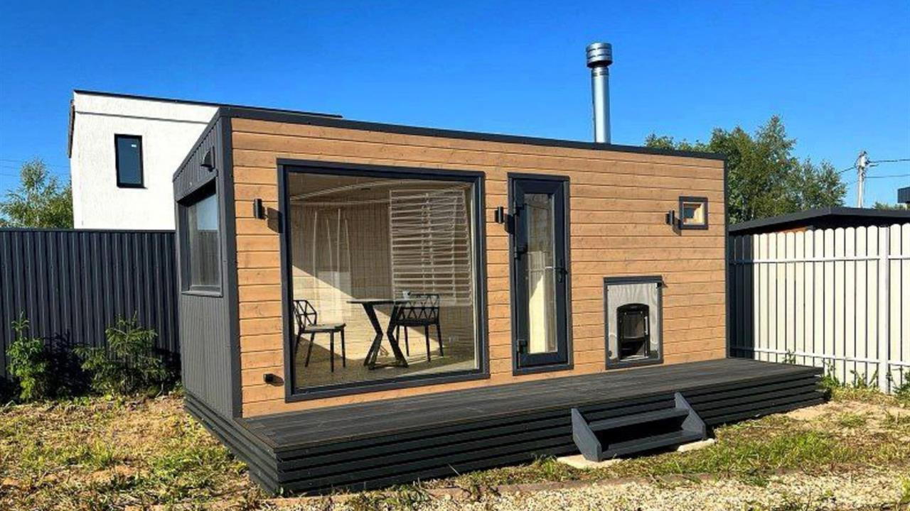

Handling efficiency
Lower mass can improve movement, staging, and alignment when handled correctly.
Lightweight Construction
Low-mass exterior panels can simplify handling and dry installation, but they still require support, storage control, fixing review, wind-load review, and careful site protection.
Lightweight construction reduces handling burden and supports modular-friendly exterior execution. It does not remove the need for structural review, correct support spacing, wind-load design, or controlled lifting.
Lower mass can improve movement, staging, and alignment when handled correctly.
Mechanical fixing reduces curing-dependent exterior work.
Panels longer than 3 m need distributed support at ends and center.
Substrate, wind, fixing, impact, and code conditions remain project-specific.
Use this category as part of a complete exterior system review. Each topic should identify the controlled behavior, the workflow stage, the risk condition, and the verification point.
Define whether the page controls water, heat, load, geometry, surface protection, manufacturing consistency, or site workflow.
Locate the control point in design, production, loading, storage, cutting, installation, or inspection.
Identify joints, corners, openings, cut edges, fasteners, support spans, coatings, packaging, or substrate transitions.
Use drawings, diagrams, site photos, QC images, installation frames, loading records, or final inspection notes.
Practical Workflow
Lightweight value is realized when transport, storage, lifting, fixing, and inspection are coordinated.
Keep panels dry, level, supported, and close to the work zone.
Use distributed support and coordinated movement for long panels.
Seat panels before mechanical attachment and check substrate conditions.
Prevent scratches, impact, rain exposure, and unsupported spans.
Show worker placement at both ends and center for panels over 3 m.
Show staging, lift path, fixing, trim closure, and inspection points.
Technical subpages for detail-level engineering logic, failure conditions, checkpoints, and evidence embedding.
This category should be read as part of the connected exterior system, not as an isolated topic.
Low mass still requires distributed support, storage control, and deformation prevention.
Dry fixing and repeatable panel placement support lightweight facade workflow.
Wind load, substrate, fixing, and long-panel behavior remain engineering checks.
Future diagrams, installation frames, QC images, and project details should validate this relationship.
Future evidence should document real system behavior. These slots are reserved for technical visuals, not decorative images.
 Diagram
DiagramSystem detail, control layer, sequencing, or load/water/thermal path drawing.

Field FrameInstallation, handling, storage, cutting, cleaning, or inspection photo frame.
 QC Record
QC RecordFactory, packaging, dimensional, surface, or loading verification image.
 Project Detail
Project DetailBuilt facade condition showing corner, opening, trim, drainage, or panel continuity.
Engineering documentation should describe how workflows break, where risk concentrates, and what must be checked before the next step proceeds.
Water control depends on overlap, drainage exits, flashing, drying paths, and sequencing. Do not block intended exits.
Joints, fasteners, trims, openings, cuts, and damaged cores can interrupt insulation continuity.
Metal filings must be removed from coated surfaces and cut edges before moisture exposure.
Wide pallet spacing or uneven supports can deform long panels under their own weight.
Reverse-lap sequencing can direct water behind the cladding instead of outward.
Verify the control point before moving to the next stage: seat, fix, close, drain, clean, inspect.
No. Lightweight means reduced mass, while strength still depends on design and fixing.
Long panels over 3 m should use center support where practical to prevent sag.
No. Wind, substrate, height, and code requirements still need review.
Unsupported storage can deform lightweight long panels before installation.